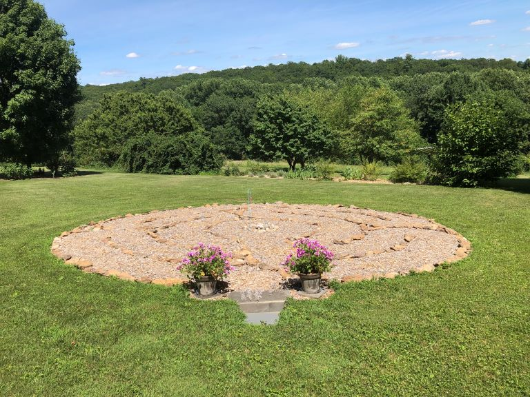
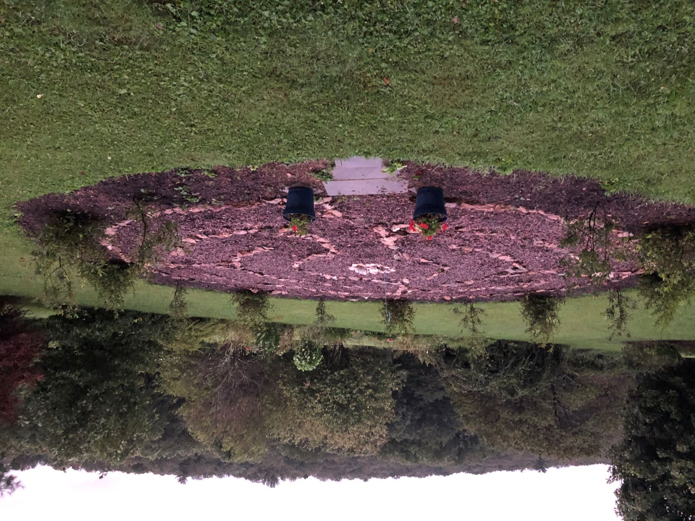
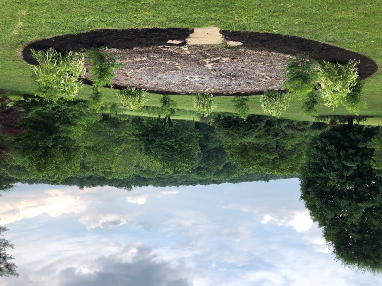

Winter meditation in first winter after planting the Virginia Sweetspire

The labyrinth is loosely based on a greatly simplified, small scale model of the one constructed at Notre-Dame d'Chartres Cathedral in Chartres, France. It is oriented in alignment with the four primary directions, one enters from the West, facing East. A walking meditation takes one through the four directions several times. In the center one may place any small object of meaning or simply gather courage or leave one's cares.
It is constructed with fieldstone from the property except for the three entrance pieces of bluestone from a salvage store in Baltimore. The outer shrub border consists of alternating Virginia Sweetspire and Winterberry native shrubs.
When first installed
Winter meditation in first winter after planting the Virginia Sweetspire
Shortly after planting the Winterberry (named for the bright red berries persisting through winter, not for being planted in the winter).
Final part of the plan completed, aluminum edging installed around the outer shrub border to keep the shrubs out of the lawn and vice versa. Here in June the Virginia Sweetspire is in bloom
